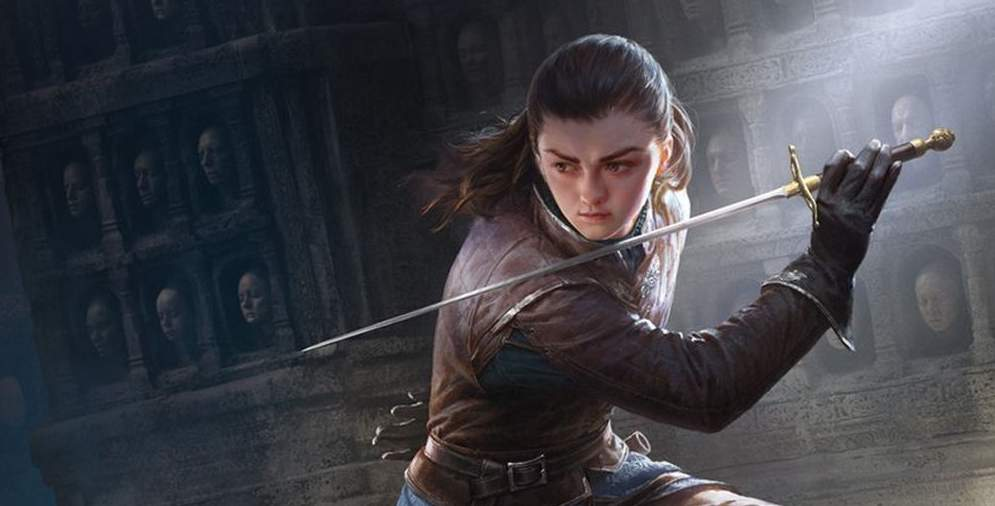
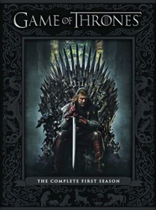

| Main |
|
Hello Visitor |
| כותרת | ||
|
דאינריז "פרי-סער" טארגאריין דאינריז טארגאריין היא אחת האחרונות משושלת טארגאריין. היא נולדה לאחר מותו של אביה אאיריז, ואמה מתה בלידתה. היא נאלצה לברוח מן הממלכה יחד עם אחיה וייסריז, קרוב המשפחה היחיד שנותר לה, לערים החופשיות שמעבר לים הצר, מחשש שאנשיו של "החמס", המלך רוברט בראתיאון, יחפשו אחריהם ויהרגו אותם. אחיה החליט להשיאה לחאל דרוגו, מנהיג הדות'ראקים, בתמורה לצבא שינסה לכבוש חזרה את שבע הממלכות. לאחר מות בעלה ומות בנה, דאינריז הקימה לתחייה שלושה דרקונים מביצים עתיקות ומאובנות עמן נכנסה אל תוך הלהבות. מאז ואילך כונתה "אם הדרקונים" ו"הבלתי נשרפת". |
משחקי הכס היא היא סדרת פנטזיה טלוויזיונית אמריקאית מצליחה
הסדרה מבוססת על "שיר של אש ושל קרח" – סדרת ספרי פנטזיה אפית מאת הסופר האמריקאי ג'ורג' ר. ר. מרטין.
|
|
|  |  | |